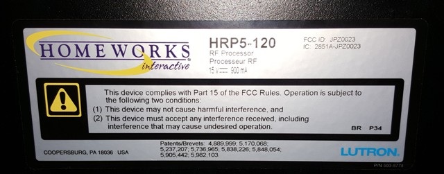

|
This page last changed on Jul 23, 2015 by cuzzler.
I inherited a Lutron Homeworks Illumination system (not RA2) that takes the older command set. After running through all the different HA remotes/programs out there, OpenRemote is by far my favorite. I've tried using the current Lutron protocol but because it's setup to use the newer commands, it doesn't play nice with my system. Actually every 3rd party HA system out there uses the newer Lutron protocol.
Does anyone have any suggestions? I have a good understanding on what needs to happen to talk to my system and the differences are pretty minute as far as I can tell, commands and address formatting are slightly different but connecting through telnet is the same. Anyways any help would be greatly appreciated.
Thanks!
|
The current Lutron protocol is for Homeworks Illumination (P5) processors, it not using the newer QS protocol.
What processor do you have ?

Posted by ebariaux at Jul 29, 2015 13:18
|
|
Hey Eric,
Thanks for your response. Trying to poll the processor info at work but not sure which command gives me that info. When I telnet to the processor, it gives me an LNET> prompt instead of a GNET> and the commands to control the devices are slightly different than the commands that the lutron plugin uses. ie to "FADEDIM" "RAISEDIM" "LOWERDIM".
I'll get more info from the processor tonight when I get off work.
Thanks,
Brent
Posted by cuzzler at Jul 29, 2015 16:40
|
|
Below is a shot of the back of my controller. It's an HRP5-120 which I believe is a P5 processor. The only documentation I could from from Lutron that shows this particular command set is a PDF labeled HWI RS232 Protocol.pdf.
Looking through the Lutron class files for OpenRemotes current Lutron protocol shows a different command set than mine. Is there a way to manually login with a telnet connection and send some of these strings through the designer just to test it out? Thanks for your help with this.
Here is what a command string looks like from telnet prompt. DBP is short for Dimmer Button Press:
LNET> DBP, [1:8:1:10], 1
Processor 01 O/S Rev : 01.64.00 T9

Snapshot of some of the terminal commands.
FADEDIM : Fade a Dimmer (RPM or Vareo)
RAISEDIM : Raise a Dimmer (RPM or Vareo)
LOWERDIM : Lower a Dimmer (RPM or Vareo)
STOPDIM : Stop a Dimmer (RPM or Vareo)
FLASHDIM : Flash a Dimmer (RPM or Vareo)
STOPFLASH : Stop a Dimmer Flashing (RPM or Vareo)
KBP : Keypad button press
KBR : Keypad button release
KBDT : Keypad button double tap
KBH : Keypad button hold
DBP : Dimmer button press
DBR : Dimmer button release
DBDT : Dimmer button double tap
DBH : Dimmer button hold
KBSS : Keypad button Scene Saver
KBSR : Keypad button Scene Restore
Brent
Posted by cuzzler at Jul 31, 2015 00:34
|
|
I re-checked the protocol implementation and it's definitely using the protocol for your HomeWorks processor.
Not all of the commands are implemented though, but:
- KBP, KBR, KBDT, KBH and RKLS are used for Keypad features
- FADEDIM, RAISEDIM, LOWERDIM and STOPDIM are used for dimmers
- GSS and RGS are used to manage GrafikEye scenes
What problems are you effectively seeing when trying to control your system with OR ?
Do you see any information in the OR logs ?
Posted by ebariaux at Jul 31, 2015 07:56
|
|
{kind=link}
{kind=link}
{kind=link}